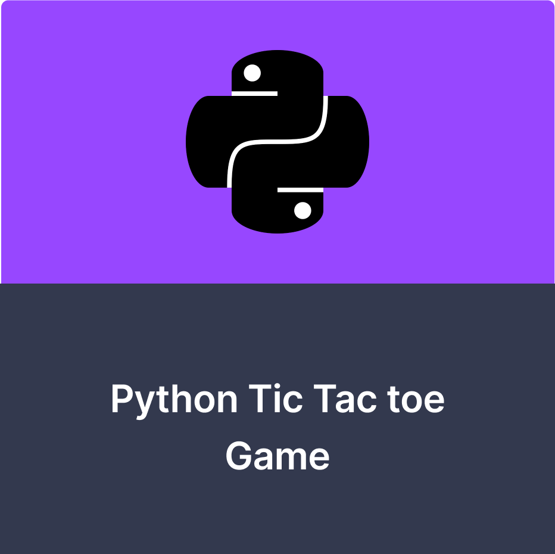
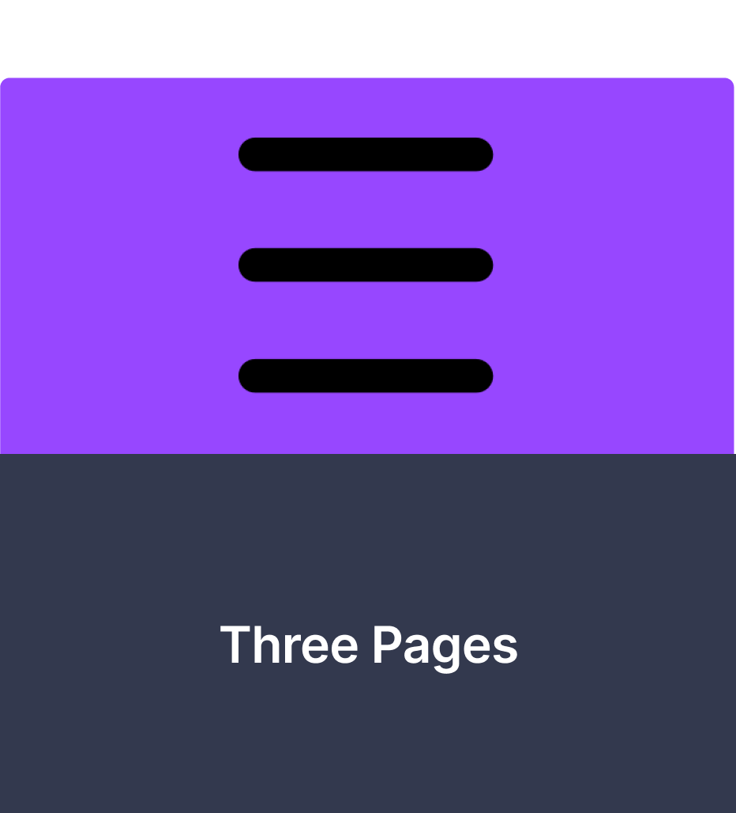
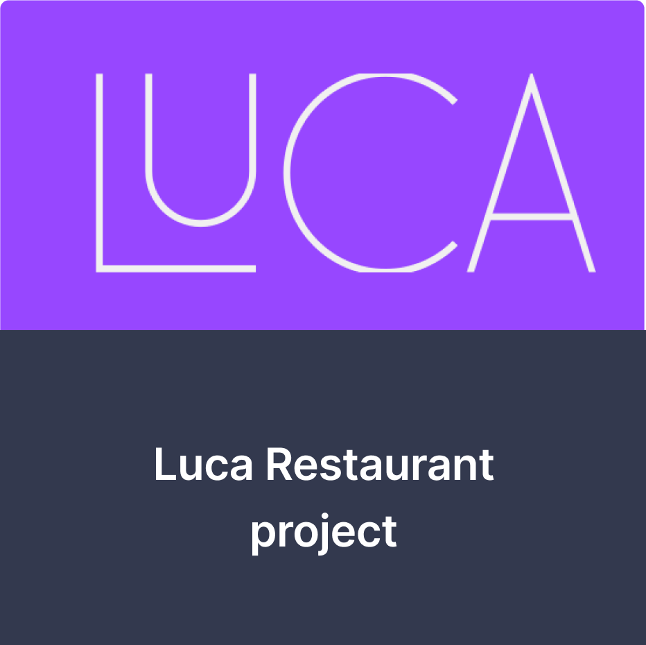

Please wait for page to load correctly...
Abdur rahman
Rashid
UX and UI developer
SCHOOLING
My Foundation
I started and finished my A-Level education in my local area of Tower Hamlets or more specifically Stepney Green in the Stepney Green Maths and Computing Sixth Form.
This is where i built my basis for my coding and design principles without learning programming officially.
I took A-Level s in Graphics Design, Product Design and Media studies learning the critical thinking skills, user experience design and design principles.
Check out the rest of the teams school locations below...
CURIOUS
Always Learning
I am deeply curious and have a love for learning. I am always seeking new knowledge and experiences, and I have a strong desire to understand the world around me.
I enjoy delving into new subjects and exploring different perspectives, and I am not satisfied with simply knowing the surface level of things.
My curiosity drives me to constantly ask questions and seek answers, and I am never afraid to admit when I don't know something. My love for learning is an integral part of who I am and it shapes the way I interact with the world.
It makes me a lifelong learner and a person who is always growing and expanding my horizons.
RESILIENT
See it to the END
I am a hard worker and I never give up. I am dedicated to achieving my goals and I am willing to put in the time and effort to make them happen.
I am not afraid of hard work and I am always willing to go the extra mile to get things done. I am persistent and I don't let setbacks or obstacles discourage me.
I know that success comes from hard work and perseverance, and I am willing to do whatever it takes to achieve it. I am determined and resilient, and I am committed to seeing things through to the end.
I am a person who is always pushing forward and I will not give up until I have reached my desired outcome.
PROJECTS
Check my Projects out
  Get in contact with me and start the next BIG thing
